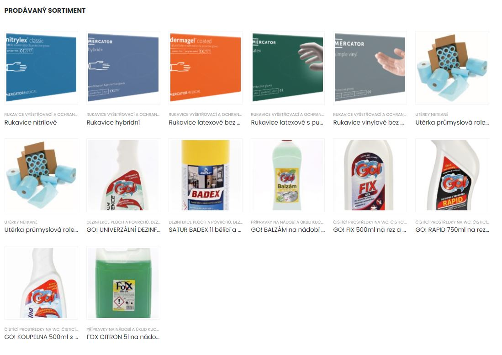

O společnosti
Naše společnost byla založena v roce 2006 jako rodinná firma. Hlavním zaměřením jsou dodávky pomocného materiálu pro odvětví výroby potravinářského, optického a automobilového průmyslu.
V červenci 2021 došlo k přestěhování do nových prostor, které nabízí vhodnější dizpoziční možnosti pro obchodní chod společnosti.
